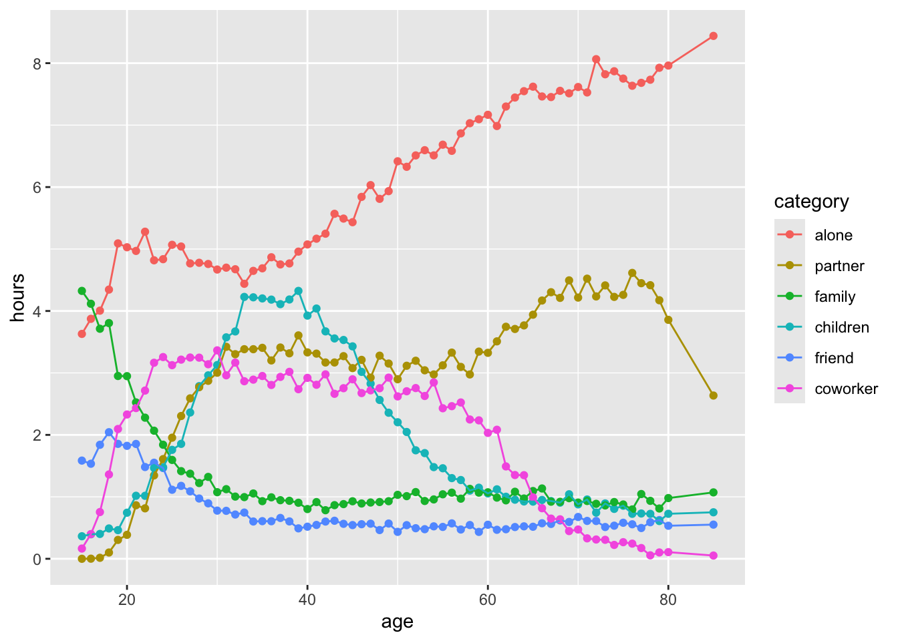
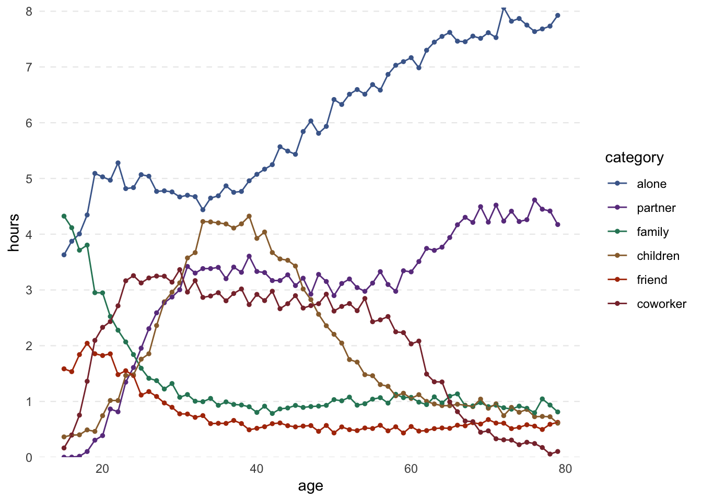
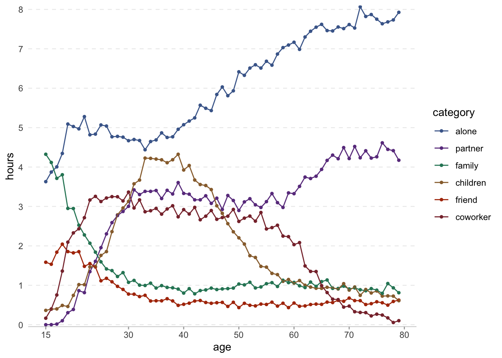
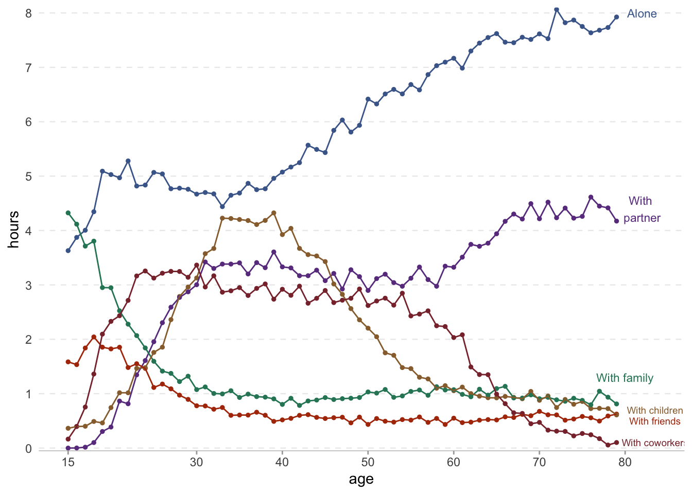
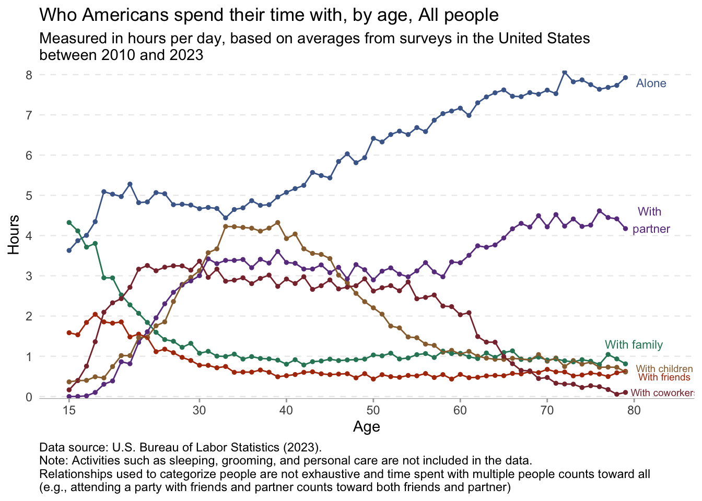
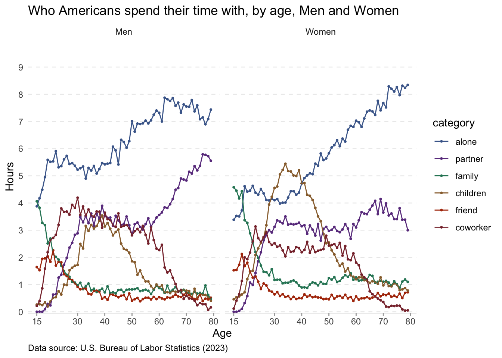

library(tidyverse)
library(janitor)
library(scales)
library(ggeasy)
library(ggannotate)
# remotes::install_github("mattcowgill/ggannotate")day 2 slope
This plot from Our World in Data illustrates the amount of time that we spend with others and how that changes with age. The slope of line plotting the amount of time that people spend alone is pretty terrifying. Lets see if we can reproduce that plot using ggplot.
load packages
read in the data
Here I am reading the data using the owidapi package and selecting and renaming columns within the same line of code. I also want to make the data long so that the category information appears in a single column and the hours values in another.
I know that colours are often easier to deal with if we turn character variables into factors so that we can set the order. Here I use fct_relevel() to order the categories so that I can easily line up which colour is associated with each.
time <- read_csv("https://ourworldindata.org/grapher/time-spent-with-relationships-by-age-us.csv?v=1&csvType=full&useColumnShortNames=true") %>%
clean_names() %>%
select(group = entity, age = year,
alone = t_who_category_alone, friend = t_who_category_friend,
children = t_who_category_children, family = t_who_category_family,
partner = t_who_category_partner, coworker = t_who_category_co_worker) %>%
pivot_longer(names_to = "category", values_to = "hours", alone:coworker)Rows: 201 Columns: 9
── Column specification ────────────────────────────────────────────────────────
Delimiter: ","
chr (1): Entity
dbl (7): Year, t__who_category_alone, t__who_category_friend, t__who_categor...
lgl (1): Code
ℹ Use `spec()` to retrieve the full column specification for this data.
ℹ Specify the column types or set `show_col_types = FALSE` to quiet this message.time$category <- fct_relevel(time$category, c("alone", "partner", "family", "children", "friend", "coworker"))
levels(time$category) #check levels[1] "alone" "partner" "family" "children" "friend" "coworker"glimpse(time)Rows: 1,206
Columns: 4
$ group <chr> "All people", "All people", "All people", "All people", "All …
$ age <dbl> 15, 15, 15, 15, 15, 15, 16, 16, 16, 16, 16, 16, 17, 17, 17, 1…
$ category <fct> alone, friend, children, family, partner, coworker, alone, fr…
$ hours <dbl> 3.629829200, 1.584973700, 0.363883400, 4.324233500, 0.0000000…make basic plot
The dataset contains time use data for Male and Female separate, but lets start with a plot of All people.
time %>%
filter(group == "All people") %>%
ggplot(aes(x = age, y = hours, colour = category)) +
geom_point() +
geom_line() 
Basic plot… check! Here is a list of things I would like to change…
- theme and colours
- add horizontal gridlines
- filter out data point more than 80
- start x axis at 15, 30 then in increments of 10
- y axis add h to numbers
- add group annotations rather than legend
theme and colours
I started by filtering out data with age values greater than 80. I used the ColorZilla web extension to get the # codes for the colours in the Our World in Data plot and scale_colour_manual() to set the colours.
I fixed the y axis using scale_y_continuous() breaks and got most of the way there with theme_minimal(). The easy_remove_gridlines() function from ggeasy makes it easy to control which gridlines you want to display. Here I want to remove both major and minor verticial lines but keep the major horizontal lines. I want the gridlines to be dotted and use the theme(panel.grid = element_line() to achieve that.
time %>%
filter(age < 80) %>%
filter(group == "All people") %>%
ggplot(aes(x = age, y = hours, colour = category)) +
geom_point(size = 1) +
geom_line() +
scale_colour_manual(values = c("#496899", "#6b3d8d", "#2b8465", "#986d39", "#b03508", "#883039")) +
scale_y_continuous(expand = c(0,0), breaks = seq(0,8,1)) +
theme_minimal() +
easy_remove_gridlines(axis = "x", major = TRUE, minor = TRUE) +
easy_remove_gridlines(axis = "y", major = FALSE, minor = TRUE) +
theme(panel.grid = element_line(linewidth = 0.4, linetype = 2))
axes
Now theme_minimal() removes the x and y axis lines and ticks. I want to add the line/ticks back in on just the x axis so use theme(axis.line.x = element_line()and theme(axis.ticks.x = element_line().
time %>%
filter(age < 80) %>%
filter(group == "All people") %>%
ggplot(aes(x = age, y = hours, colour = category)) +
geom_point(size = 1) +
geom_line() +
scale_colour_manual(values = c("#496899", "#6b3d8d", "#2b8465", "#986d39", "#b03508", "#883039")) +
theme_minimal() +
scale_y_continuous(expand = c(0,0), limits = c(-0.05,8.1), breaks = seq(0,9,1)) +
scale_x_continuous(breaks=c(15,30,40,50,60,70,80)) +
easy_remove_gridlines(axis = "x") +
easy_remove_gridlines(axis = "y", major = FALSE, minor = TRUE) +
theme(panel.grid = element_line(linewidth = 0.4, linetype = 2)) +
theme(axis.line.x = element_line(linewidth = 0.2, colour = "darkgrey", linetype=1),
axis.ticks.x = element_line(linewidth = 0.5, color="darkgrey")
)
annotations
The easy_remove_legend() function from the ggeasy package makes it easy to get rid of a legend; getting annotations on the end of the each line is a bit tricker. I’m sure there is a simpler way, but the ggannotate package by Matt Cowgill pulls up a shiny panel that allows you to place annotations where you want them and then copy the geom_text() code into your chunk.
time %>%
filter(age < 80) %>%
filter(group == "All people") %>%
ggplot(aes(x = age, y = hours, colour = category)) +
geom_point(size = 1) +
geom_line() +
scale_colour_manual(values = c("#496899", "#6b3d8d", "#2b8465", "#986d39", "#b03508", "#883039")) +
theme_minimal() +
scale_y_continuous(expand = c(0,0), limits = c(-0.05,8.1), breaks = seq(0,9,1)) +
scale_x_continuous(breaks=c(15,30,40,50,60,70,80)) +
easy_remove_gridlines(axis = "x") +
easy_remove_gridlines(axis = "y", major = FALSE, minor = TRUE) +
theme(panel.grid = element_line(linewidth = 0.4, linetype = 2)) +
theme(axis.ticks.x = element_line(linewidth = 0.5, color="darkgrey") ,
axis.line.x = element_line(linewidth = 0.2, colour = "darkgrey", linetype=1)) +
easy_remove_legend() +
geom_text(data = data.frame(x = 82, y = 8,
label = "Alone"), aes(x = x, y = y, label = label), size = 3, colour = "#496899") +
geom_text(data = data.frame(x = 82, y = 4.4,
label = "With \npartner"), aes(x = x, y = y, label = label), size = 3,colour = "#6b3d8d") +
geom_text(data = data.frame(x = 80, y = 1.3,
label = "With family"),aes(x = x, y = y, label = label), size = 3, colour = "#2b8465") +
geom_text(data = data.frame(x = 83.5, y = 0.7,
label = "With children"), aes(x = x, y = y, label = label), size = 2.5,colour = "#986d39") +
geom_text(data = data.frame(x = 83.5, y = 0.5,
label = "With friends"), aes(x = x, y = y, label = label), size = 2.5,colour = "#b03508") +
geom_text(data = data.frame(x = 83.5, y = 0.1,
label = "With coworkers"), aes(x = x, y = y, label = label), size = 2.5, colour = "#883039")
titles and captions
Finishing touches… title, subtitle and caption. The theme(plot.caption = element_text(hjust = 0)) makes the caption appear on the left side of the plot.
time %>%
filter(age < 80) %>%
filter(group == "All people") %>%
ggplot(aes(x = age, y = hours, colour = category)) +
geom_point(size = 1) +
geom_line() +
scale_colour_manual(values = c("#496899", "#6b3d8d", "#2b8465", "#986d39", "#b03508", "#883039")) +
theme_minimal() +
scale_y_continuous(expand = c(0,0), limits = c(-0.05,8.1), breaks = seq(0,9,1)) +
scale_x_continuous(breaks=c(15,30,40,50,60,70,80)) +
easy_remove_gridlines(axis = "x") +
easy_remove_gridlines(axis = "y", major = FALSE, minor = TRUE) +
theme(panel.grid = element_line(linewidth = 0.4, linetype = 2)) +
theme(axis.ticks.x = element_line(linewidth = 0.5, color="darkgrey") ,
axis.line.x = element_line(linewidth = 0.2, colour = "darkgrey", linetype=1)) +
easy_remove_legend() +
### the geom_text code below are created using the ggannotate package
geom_text(data = data.frame(x = 82, y = 7.8,
label = "Alone"), aes(x = x, y = y, label = label), size = 3, colour = "#496899") +
geom_text(data = data.frame(x = 82, y = 4.4,
label = "With \npartner"), aes(x = x, y = y, label = label), size = 3,colour = "#6b3d8d") +
geom_text(data = data.frame(x = 80, y = 1.3,
label = "With family"),aes(x = x, y = y, label = label), size = 3, colour = "#2b8465") +
geom_text(data = data.frame(x = 83.5, y = 0.7,
label = "With children"), aes(x = x, y = y, label = label), size = 2.5,colour = "#986d39") +
geom_text(data = data.frame(x = 83.5, y = 0.5,
label = "With friends"), aes(x = x, y = y, label = label), size = 2.5,colour = "#b03508") +
geom_text(data = data.frame(x = 83.5, y = 0.1,
label = "With coworkers"), aes(x = x, y = y, label = label), size = 2.5, colour = "#883039") +
labs(title = "Who Americans spend their time with, by age, All people",
subtitle = "Measured in hours per day, based on averages from surveys in the United States \nbetween 2010 and 2023",
x = "Age",
y = "Hours",
caption = "Data source: U.S. Bureau of Labor Statistics (2023). \nNote: Activities such as sleeping, grooming, and personal care are not included in the data. \nRelationships used to categorize people are not exhaustive and time spent with multiple people counts toward all \n(e.g., attending a party with friends and partner counts toward both friends and partner)") +
theme(plot.caption = element_text(hjust = 0)) # make the caption appear on the left
bonus
At this point I am wondering whether who people spend their time with differs for men and women. Here I have changed the filter to include both Men and Women and added a facet_wrap(~group) to plot the gender data separately.
time %>%
filter(age < 80) %>%
filter(group %in% c("Men", "Women")) %>%
ggplot(aes(x = age, y = hours, colour = category)) +
geom_point(size = .6) +
geom_line() +
facet_wrap(~ group) +
scale_colour_manual(values = c("#496899", "#6b3d8d", "#2b8465", "#986d39", "#b03508", "#883039")) +
theme_minimal() +
scale_y_continuous(expand = c(0,0), limits = c(-0.05,10), breaks = seq(0,9,1)) +
scale_x_continuous(breaks=c(15,30,40,50,60,70,80)) +
easy_remove_gridlines(axis = "x") +
easy_remove_gridlines(axis = "y", major = FALSE, minor = TRUE) +
theme(panel.grid = element_line(linewidth = 0.4, linetype = 2)) +
theme(axis.ticks.x = element_line(linewidth = 0.5, color="darkgrey") ,
axis.line.x = element_line(linewidth = 0.2, colour = "darkgrey", linetype=1)) +
labs(title = "Who Americans spend their time with, by age, Men and Women",
caption = "Data source: U.S. Bureau of Labor Statistics (2023)",
x = "Age",
y = "Hours") +
theme(plot.caption = element_text(hjust = 0)) 
It seems that women in their later years spend more time that men alone and less time with a partner, presumably because they are living longer than the men in their lives.